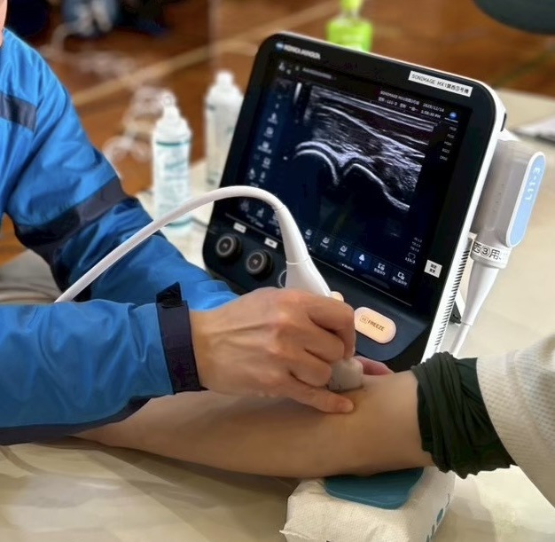
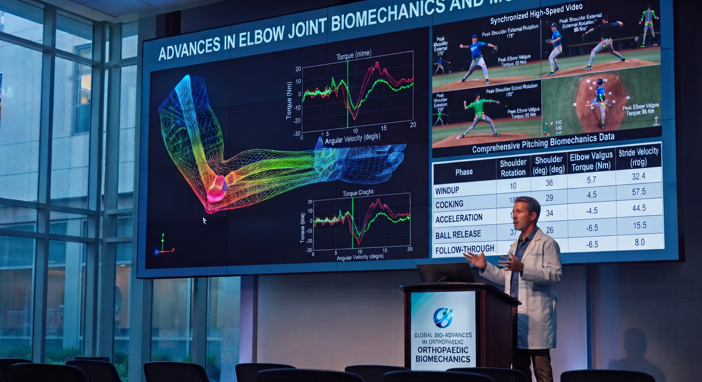

01 / CHECK
メディカルチェック
身体の状態を確認し、スポーツ障害の兆候を早期に把握することを目指します。
メディカルチェック・医療機関連携・研究活動
年に数回、アマチュアアスリートを対象としたメディカルチェックを実施しています。

身体の状態を確認し、スポーツ障害の兆候を早期に把握することを目指します。
メディカルチェックで得られた情報をもとに、必要に応じて適切な医療機関へつなぎ、継続的な診療や治療を支援します。

メディカルチェックなどで得られたデータを適切な同意や倫理的手続きのもとで活用し、スポーツ障害の予防・早期発見につながる新たな知見の創出を目指します。
※ 検査項目や対象者は開催回ごとに異なる場合があります。